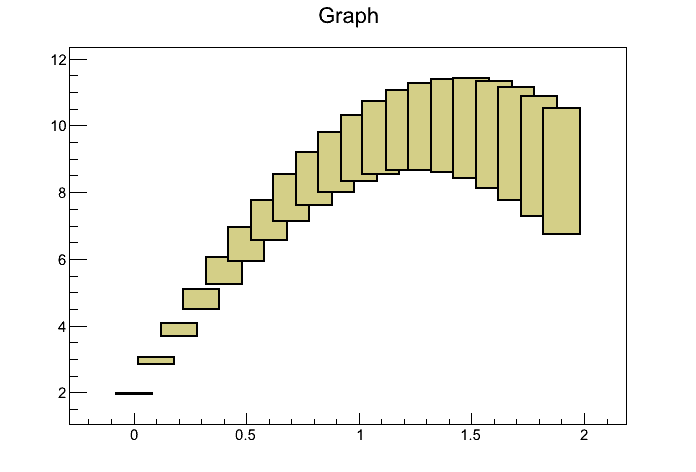
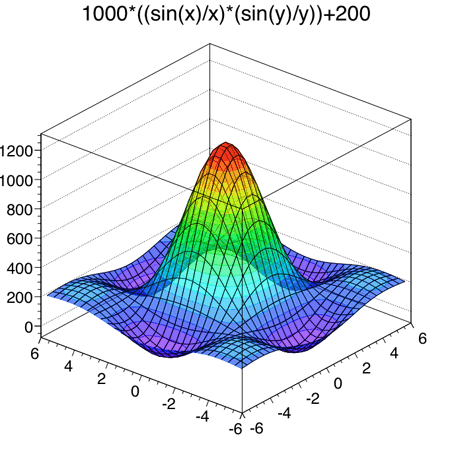
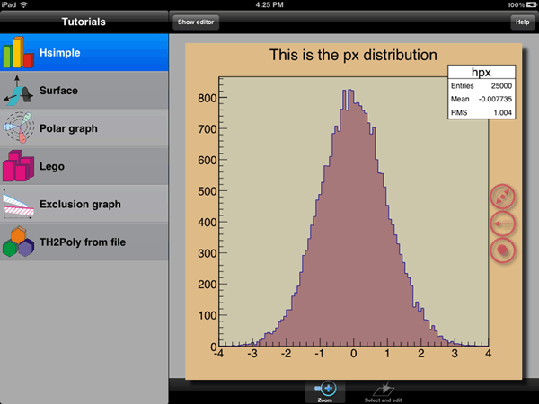
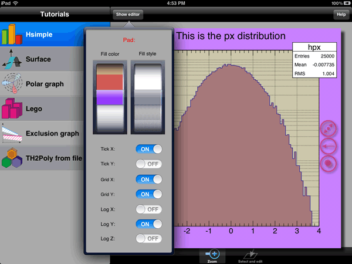
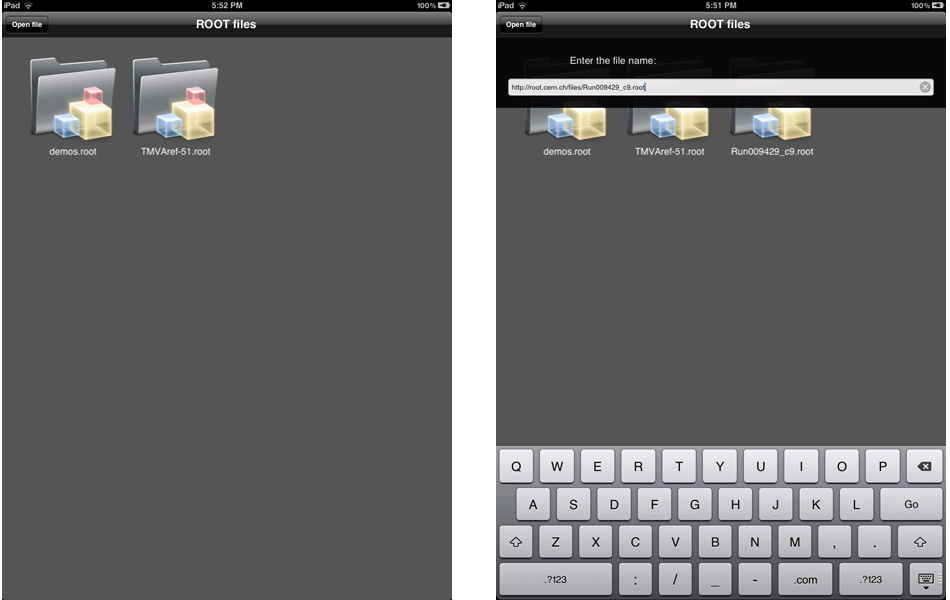
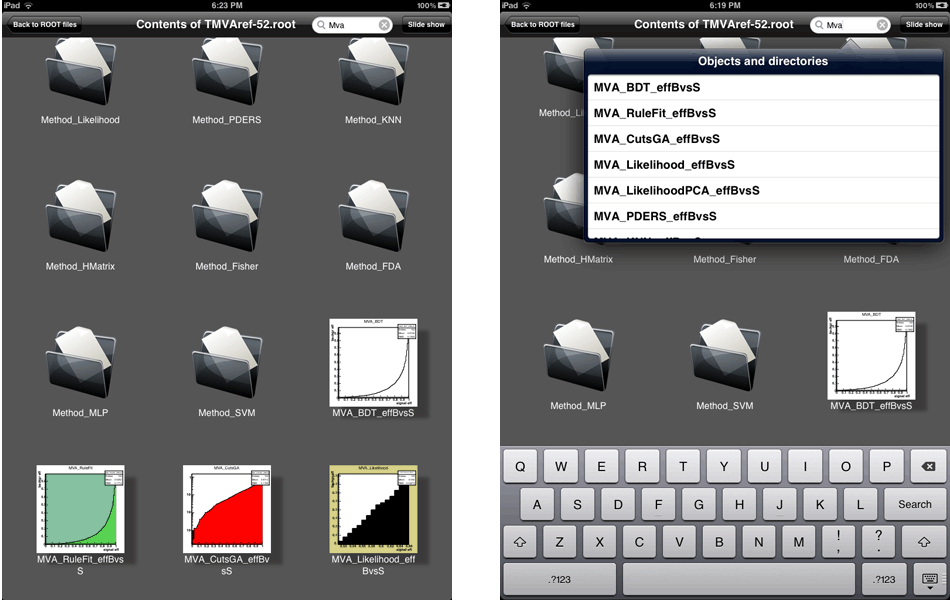
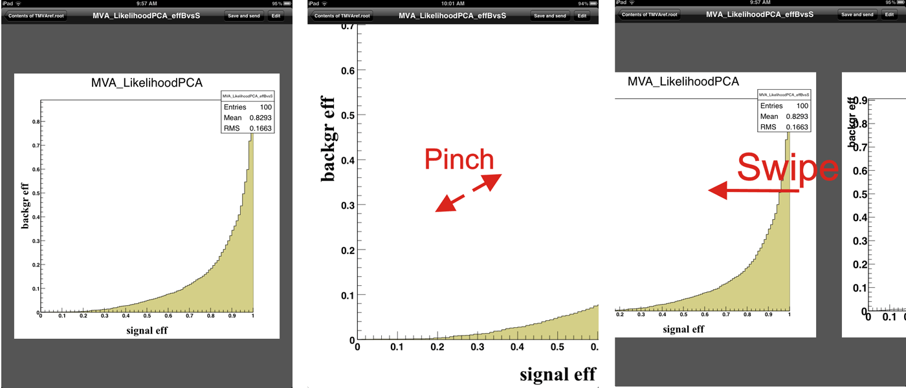

ROOT Version 5.32/00 Release Notes
ROOT version 5.32/00 has been released on Nov 29, 2011. In case you are upgrading from an old version, please read the releases notes of version 5.26, 5,28 and version 5.30 in addition to these notes.
The release of version 5.34 is scheduled for May 29, 2012.
- Bindings - packages related to the interplay with other programming languages (Python, Ruby)
- Cint - the C++ interpreter
- Core - the basic ROOT functionality
- Geometry - building, representing and drawing geometrical objects
- 2D Graphics - ROOT's two dimensional graphics interface
- 3D Graphics - ROOT's three dimensional graphics interface
- Graphical User Interface - from basic GUI elements to ROOT's own, complete dialogs
- Histograming - counting values, spectra, and drawing them
- HTML - the documentation generator
- Input/Ouput - storing and reading data
- Mathemathics - everything one can use to calculate: minimizers, matrixes, FFT, and much more
- Miscellaneous - things that didn't make it into the other groups: table
- Monte Carlo - monte carlo and physics simulation interfaces
- Networking - network-related parts, e.g. protocols and authentication interfaces
- PROOF - parallel ROOT facility
- RooFit - a fitting library
- RooStats - a collection of statistical tools
- SQL - database interfaces
- TMVA - multivariate analysis tools
- Trees - ROOT's unique container class and related utilities
- Tutorials - ROOT's Tutorials
For more information, see:
http://root.cern.ch
The following people have contributed to this new version:
Bertrand Bellenot, CERN/SFT,Rene Brun, CERN/SFT,
Philippe Canal, FNAL,
Olivier Couet, CERN/SFT,
Kyle Cranmer, NYU/ATLAS, RooStats,
Sven Kreiss, NYU/ATLAS, RooStats,
Gena Kukartsev, CERN and FNAL/CMS,
Gerri Ganis, CERN/SFT,
Andrei Gheata, CERN/Alice,
Christian Gumpert, CERN and University Dresden/ATLAS, Math,
Wim Lavrijsen, LBNL, PyRoot,
Sergei Linev, GSI,
Lorenzo Moneta, CERN/SFT,
Axel Naumann, CERN/SFT,
Eddy Offermann, Renaissance,
Giovanni Petrucciani, UCSD/CMS, RooStats,
Fons Rademakers, CERN/SFT,
Paul Russo, FNAL,
Joerg Stelzer, DESY/Atlas, TMVA,
Alja Tadel, UCSD/CMS, Eve,
Matevz Tadel, UCSD/CMS, Eve,
Eckhard von Toerne, University Bonn, ATLAS, TMVA,
Wouter Verkerke, NIKHEF/Atlas, RooFit,
Build System
MacOS X
- On MacOS X move to a more secure way of building. We will now always use the --enable-explicitlink ./configure option which will cause a shared lib or executable to be linked with all its dependent libraries. The OSX linker is quite good and processing this extended set of libraries for each link does cost only 3s extra time for all 100+ shared libs (13s instead of 10s). Not much for the extra security. In addition we went back to the default linker option "-undefined error", so you will get an error if symbols are unresolved. Shared libs are also linked with the option "-Wl,-dead_strip_dylibs" which tells the linker to remove any shared lib which is not used to resolve any symbols (this should solve the long standing issue of ACliC linking all previously created shared libs even when not needed).
Linux
- Make --enable-explictlink the default on linux too (was already the case for: macosx, freebsd, openbsd, aix and win32). This adds some extra time to the link stage, which can be recuperated by using the newer, much faster, gold linker. In addition we added the linker option "-Wl,--no-undefined", so you will get an error if symbols are unresolved. Explicit linking is required by newer distributions, like Ubuntu 11.10, that require all dependent shared libs to be specified when linking. They also have default options set to dead strip shared libs that don't resolve any symbols (equivalent to the MacOS X build changes described above).
Core Libraries
TClonesArray
- Introduce TClonesArray::ConstructedAt which
always returns an already constructed object. If the slot is being used for the
first time, it calls the default constructor otherwise it returns the object as
is (unless a string is passed as the 2nd argument to the function in which case,
it also calls Clear(second_argument) on the object).
This allows to replace code like:
for (int i = 0; i < ev->Ntracks; i++) { new(a[i]) TTrack(x,y,z,...); ... ... } ... a.Delete(); // or a.Clear("C")with the simpler and more efficient:for (int i = 0; i < ev->Ntracks; i++) { TTrack *track = (TTrack*)a.ConstructedAt(i); track->Set(x,y,z,....); ... ... } ... a.Clear();even in case where the TTrack class allocates memory. - TClonesArray: update ExpandCreateFast to also reset the non-used slots so that calling Clear (which does too much) is no longer necessary when using ExpandCreateFast.
New Thread Pool class
- A first version of TThreadPool class has been introduced. This class implements a Thread Pool pattern. So far it supports only one type of queue - FIFO.
Thread library
- Reduces risk of internal dead lock by using a private internal lock to protect the internals of TThread, rather than using TThread::Lock
- New header TThreadSlots.h to centralize and formalize the use of the TThread local memory slots amongst the ROOT packages.
Global Variables
- The global values gPad, gVirtualX, gInterpreter, gDirectory and gFile are now all accessed via a static function of their respective class. The access is made transparent via a CPP macro.
- The access is now also made transparent from the CINT and python prompt.
- gPad, gVirtualX and gInterpreter are now accessible even when their value is zero and they now properly support tab completion.
- See the important note in the I/O section on gDirectory and gFile which are now thread local.
Meta
- The new interface TDictionary::GetDictionary(const char*) offers a single entry point to query the type based on its name, conveniently combining TDataType and TClass queries. It does name normalization (removing std etc).
- Add the ability to explicitly forbid (or allow) the splitting of a class (TClass::SetSplit) so that user can inforce the use of a custom streamer in all possible split cases.
- Resolve several issues with the creation of StreamerInfo for abstract classes.
- When looking for the value corresponding to an enum type, skip global that are not enums. (This improves the speed of TFile::Open by 60%).
TStyle
- The Modern style has now a transparent background for the histogram title.
Misc.
- In the root executable, auto-detect command line arguments that are local root files even if their name does not end with ".root"
- If home directory is not correctly set in pw file or user is not known, use the HOME shell variable to find the desired home directory.
I/O Libraries
LZMA Compression and compression Level setting
ROOT I/O now support the LZMA compression algorithm to compress data in addition to the ZLIB compression algorithm. LZMA compression typically results in smaller files, but takes more CPU time to compress data. To use the new feature, the external XZ package must be installed when ROOT is configured and built: Download 5.0.3 from here tukaani.org and make sure to configure with fPIC:./configure CFLAGS='-fPIC'Then the client C++ code must call routines to explicitly request LZMA compression.
ZLIB compression is still the default.
Setting the Compression Level and Algorithm
There are three equivalent ways to set the compression level and algorithm. For example, to set the compression to the LZMA algorithm and compression level 5.TFile f(filename, option, title); f.SetCompressionSettings(ROOT::CompressionSettings(ROOT::kLZMA, 5));
-
TFile f(filename, option, title, ROOT::CompressionSettings(ROOT::kLZMA, 5));
-
TFile f(filename, option, title); f.SetCompressionAlgorithm(ROOT::kLZMA); f.SetCompressionLevel(5);
Int_t GetCompressionAlgorithm() const; Int_t GetCompressionLevel() const; Int_t GetCompressionSettings() const;If the compression level is set to 0, then no compression will be done. All of the currently supported algorithms allow the level to be set to any value from 1 to 9. The higher the level, the larger the compression factors will be (smaller compressed data size). The tradeoff is that for higher levels more CPU time is used for compression and possibly more memory. The ZLIB algorithm takes less CPU time during compression than the LZMA algorithm, but the LZMA algorithm usually delivers higher compression factors. The header file core/zip/inc/Compression.h declares the function "CompressionSettings" and the enumeration for the algorithms. Currently the following selections can be made for the algorithm: kZLIB (1), kLZMA (2), kOldCompressionAlgo (3), and kUseGlobalSetting (0). The last option refers to an older interface used to control the algorithm that is maintained for backward compatibility. The following function is defined in core/zip/inc/Bits.h and it set the global variable.
R__SetZipMode(int algorithm);If the algorithm is set to kUseGlobalSetting (0), the global variable controls the algorithm for compression operations. This is the default and the default value for the global variable is kZLIB.
gDirectory
gDirectory is now a thread local! The value of gDirectory and gFile are now all accessed via a static function of their respective class. The access is made transparent via a CPP macro.Note: Whenever a thread has an associated TThread object, the value of gDirectory is now thread local, i.e. all modifications direct or indirect of gDirectory will not be seen by the other thread. In particular this means that several I/O operations (including TDirectory::Write) are thread safe (as long as all the required TClass and TStreamerInfo has been previously setup).
Note: This model does not support sharing TFile amongst threads (i.e. a TFile must be accessed from exactly one thread). This means that whenever a TFile's control is passed from a thread to another, the code must explicitly reset gDirectory to another value or there is a risk for this gDirectory to point to a stale pointer if the other thread deletes the TFile object. A TFile deletion will only affect the value of the local gDirectory and gFile.
TMemFile
Introduce TMemFile and update TFileMerger to support incremental merges. Add new tutorials (net/treeClient.C + net/fastMergeServer.C) demonstrating how a TMemFile can be used to do parallel merge from many clients. (TMemFile still needs to be better integrated with TMessage and TSocket). The new TMemFile class support the TFile interface but only store the information in memory. This version is limited to 32MB.
TMessage mess;
...
mess->ReadFastArray(scratch,length);
transient = new TMemFile("hsimple.memroot",scratch,length);
will copy the content of 'scratch' into the in-memory buffer
created by/for the TMemFile.
TMemFile *file = new TMemFile("hsimple.memroot","RECREATE");
Will create an empty in-memory of (currently fixed) size 32MB.
file->ResetAfterMerge(0);Will reset the objects in the TDirectory list of objects so that they are ready for more data accumulations (i.e. returns the data to 0 but keep the customizations).
TFile::MakeProject
- New option 'par' in to pack in a PAR file the generated
code. The first argument defines the directory and the name of the package.
For example, the following generates a PAR package equivalent to
tutorials/proof/event.par:
root [] TFile *f = TFile::Open("http://root.cern.ch/files/data/event_1.root") root [] f->MakeProject("packages/myevent.par", "*", "par");Note that, because a PAR file is a tarball, for the time being, on Windows only the package directory and the files are generated and a warning message is printed. - Properly handle the case of class which version is zero and to properly initialization array of objects (streamerElement type kStreamLoop).
- Fix support for call to MakeProject like:
gFile->MakeProject("./classCode/","*","RECREATE++") - Better error handling if the source file failed to be created or if the project directory can not be created.
TParallelMergingFile
Introduce the class TParallelMergingFile part of the net package. This class connect ot a parallel merge server and upload its content every time Write is called on the file object. After the upload the object of classes with a ResetAfterMerge function are reset.A TParallelMergingFile is created whether a ?pmerge option is passed to TFile::Open as part of the file name. For example:
TFile::Open("mergedClient.root?pmerge","RECREATE"); // For now contact localhost:1095
TFile::Open("mergedClient.root?pmerge=localhost:1095","RECREATE");
TFile::Open("rootd://root.cern.ch/files/output.root?pmerger=pcanal:password@locahost:1095","NEW")
tutorials/net/treeClient.C and fastMergeServer.C: update to follow the change in interfaces
Introduce the tutorials parallelMergerClient.C and the temporary tutorials parallelMergerServer.C
to demonstrate the parallel merging (with parallelMergerServer.C being the prototype of the upcoming
parallel merger server executable).
Other
- Introduce the new function TFileMerger::PartialMerge(Int_t) which
will Merge the list of file _with_ the content of the output
file (if any). This allows make several successive Merge
into the same TFile object.
Yhe argument defines the type of merge as define by the bit values in EPartialMergeType:
- kRegular : normal merge, overwritting the output file.
- kIncremental : merge the input file with the content of the output file (if already exising) (default).
- kAll : merge all type of objects (default).
- kResetable : merge only the objects with a MergeAfterReset member function.
- kNonResetable : merge only the objects without a MergeAfterReset member function.
- Removed TFileMerger::RecursiveMerge from the interface.
- Prevent TFileMerger (and hadd) from trying to open too many files. Add a new member function TFileMerger::SetMaxOpenedFiles and new command line option to hadd ( -n requested_max ) to allow the user to reduce the number of files opened even further.
- Update hadd and TFileMerger so that they prefix all their information message
with their names (when running hadd, the TFileMerger message are prefixed by hadd):
$ hadd -v 0 -f output.root input1.root input2.root $ hadd -v 1 -f output.root input1.root input2.root hadd merged 2 input files in output.root. $ hadd -v 2 -f output.root input1.root input2.root hadd target file: output.root hadd Source file 1: input1.root hadd Source file 2: input2.root hadd Target path: output.root:/
- Introduce non-static version of TFile::Cp allows the copy of an existing TFile object.
-
Introduce new explicit interface for providing reseting
capability after a merge. If a class has a method with
the name and signature:
void ResetAfterMerge(TFileMergeInfo*);
it will be used by a TMemFile to reset its objects after a merge operation has been done. If this method does not exist, the TClass will use a method with the name and signature:void Reset(Optiont_t *);
-
TClass now provides a quick access to these merging
function via TClass::GetResetAfterMerge. The wrapper function
is automatically created by rootcint and can be installed
via TClass::SetResetAfterMerge. The wrapper function should have
the signature/type ROOT::ResetAfterMergeFunc_t:
void (*)(void *thisobj, TFileMergeInfo*);
ResetAfterMerge functions were added to the following classes: TDirectoryFile, TMemFile, TTree, TChain, TBranch, TBranchElement, TBranchClones, TBranchObject and TBranchRef. - Avoid leaking the inner object in a container like vector<vector<MyClass*> > and vector<vector<MyClass*> *> .
- Put in place the infrastructure to optimize the I/O writes in the same way we optimized the I/O reads.
- Add the function TBuffer::AutoExpand to centralize the automatic buffer extension policy. This enable the ability to tweak it later (for example instead of always doubling the size, increasing by only at most 2Mb or take hints from the number of entries already in a TBasket).
Networking Libraries
New TSSLSocket class
The new TSSLSocket class wraps a TSocket with SSL encryption. This class is used to provide support for reading TWebFiles over https.New TUDPSocket class
The new TUDPSocket uses UDP as protocol where TSocket uses TCP. This class can be used to talk to UDP servers.XROOTD
Starting with this version (5.32/00) Xrootd is no longer distributed with ROOT. The package is still needed to build the modules 'netx', 'proofx' and 'proofd' and must be provided as external. Xrootd can be downloaded from the main web site and its installation is straightforward. A script to automatize the installation process is provided at build/unix/installxrootd.sh ; scripts to set-up the environment at bin/setxrd.sh and bin/setxrd.csh . Note that the Xrootd team has dropped support for Windows, so the Xrootd-related components of ROOT will only be built on Unices (Linux, Solaris, MacOsX). See also this page.SQL Libraries
Tree Libraries
TEntryListArray: a list of entries and subentries in a TTree or TChain
TEntryListArray is an extension of TEntryList, used to hold selected entries and subentries (sublists) for when the user has a TTree with containers (vectors, arrays, ...). End_HtmlUsage with TTree::Draw to select entries and subentries
- To fill a list elist :
tree->Draw(">> elist", "x > 0", "entrylistarray"); - To use a list to select entries and subentries:
tree->SetEntryList(elist); tree->Draw("y"); tree->Draw("z");
About the class
The class derives from TEntryList and can be used basically in the same way. This same class is used to keep entries and subentries, so there are two types of TEntryListArray's:- The ones that only hold subentries
- fEntry is set to the entry# for which the subentries correspond
- fSubLists must be 0
- The ones that hold entries and eventually lists with subentries in fSubLists.
- fEntry = -1 for those
- If there are no sublists for a given entry, all the subentries will be used in the selection
Additions with respect to TEntryList
- Data members:
- fSubLists: a container to hold the sublists
- fEntry: the entry number if the list is used to hold subentries
- fLastSubListQueried and fSubListIter: a pointer to the last sublist queried and an iterator to resume the loop from the last sublist queried (to speed up selection and insertion in TTree::Draw)
- Public methods:
- Contains, Enter and Remove with subentry as argument
- GetSubListForEntry: to return the sublist corresponding to the given entry
- Protected methods:
- AddEntriesAndSubLists: called by Add when adding two TEntryList arrays with sublists
- ConvertToTEntryListArray: convert TEntryList to TEntryListArray
- RemoveSubList: to remove the given sublist
- RemoveSubListForEntry: to remove the sublist corresponding to the given entry
- SetEntry: to get / set a sublist for the given entry
Others changes
- Reduced the memory used by a TTree in half by refactoring the code reading and writing the TBasket data; A single transient buffer holding the compressed data is now managed by TTree (and could be made thread local) rather than having one per TBranch.
- Updated TBranchElement::Unroll to no longer split a base class
that can not be split (i.e. respect the information returned
by TStreamerElement::CannotSplit (and thus TClass::CanSplit).
This disabling is currently _not_ done automatically for backward compatibility reasons and because
- Without TClass::SetCanSplit there was no way to force the splitting (short of setting the split level lower)
- Some classes still requires a custom streamer solely to read older data files (for example for file written before the advent of StreamerInfo) and are such not necessary to be used when writting (and schema evolution rules can not yet be used in this case).
- Allowed removing branches when cloning a TNtuple.
- Added an option value ("cachedbranches") to the Print() function of TTreeCache to be able to print the list of cached branches.
- Made the ownership of the TBranch by fBranch clearer (and thus allow the 'reuse' of TTree object without memory leak)
- Introduced GetLeaf(branchname,leafname) used in TTreeFormula to avoid ambiguity in the syntax introduced by too many slashes
- Improved performance of TTree::GetEntry. With this changes the 'overhead' compare to protobuf goes from 48% to 24%. (This does not include the cost of the file opening which can be comparatively large for small files. For the example used in the comparison the cost TFile::Open is 8% of the cost of 100000 calls to TTree::GetEntry)
- Prevented the use of non-existent memory when reading in an object that is part of an STL collection and which used to contains an embedded object (and this data member has been removed).
- Now properly recognize a TClonesArray data member even if the requested type was a typedef (to TClonesArray) that is in a namespace (for example edm::Event::ContaierType).
PROOF System
NB: Starting with version 5.32/00, Xrootd is not dostributed anylonger with ROOT but has become an external package. If not avaibable the PROOF modules 'proofx' and 'proofd' will not be built. The PROOF core modules, however, are built. Namely, PROOF-Lite will be available even when Xrootd is not.New functionality
- Creating PAR packages from ROOT data files: it is now possible to use TFile::MakeProject to create a PAR file to read the file. Details in here.
- Add support for backend-dependent record formatting of PROOF monitoring. This is achieved by introducing a new layer, described by the abstract interface TProofMonSender, with the record format defined in the backend implemenation (currently TProofMonSenderML, for MonaLisa, and TProofMonSenderSQL, for SQL backends). Currently three types of records are sent: 'summary' (derived from what was currently posted), 'dataset', with entries per dataset processed in the query, and 'files', with entries per file processed in the query. In SQL terms, each of this records corresponds to a different table. Sending of any of the three records can be toggled independently. See also the web pages dedicated to monitoring.
- In TProofMgr, add 'ping' functionality to test in non-blocking way if a PROOF service is listening at a given port of a given host.
Improvements
- In PROOF-Bench, file generation, add the possibility to change only the generating function, passed as TMacro. Add also check on the free space on the device and skip file generation if less than 10% or less than 1 GB.
- Record in TStatus also the max memory usage on the master and printed via TStatus::Print; this allow a quick visualisation of the overall memory usage at the end of the query.
- Import version 0.9.6 of afdsmgrd
- Make sure that the name(s) of the processed dataset(s) are registered in the TFileInfo objects being processed, so that it can be used for monitoring.
- In XrdProofd, add possibility to skip the checks for the data directories during session startup, as they may significantly slowdown the startup process is the medium is busy. In such a case, admins are responsible to create the directories in advance; the session releated part fo the path is created by the session once up.
- In XrdProofd, move the check for the username after authentication. This is because authentication may run some credentials-to-user mapping which can modify the requested username. This way we really check the final username and not the one requested by the client, which may even not exist on the machines. Side modification: when the mapping function returns more usernames, the username specified by the client is used to help choosing the effective username among the available choices; if not match is found the handshake does any longer fail, the first mapped username is chosen instead.
- In XrdProofd, allow 'xpd.allowedgroups' to control also PROOF groups, not only UNIX ones.
- In XrdProofd, simplify error messages in case of login failure because of non-authorization.
- Remove hardcoded additions of dirname(COMPILER) and of '/bin:/usr/bin:/usr/local/bin' in front of PATH. These uncontrolled additions could hide specific settings in PATH and be the source of weird problems appearing in PROOF only.
- Add more flexibility to the definition of the library path seen by proofserv. So far to avoid ambiguites in some cases, $ROOTSYS/lib was removed and the one of the ROOT version chosen was added later on in front, which proved to be to aggressive in some cases.
- All changes (and fixes) needed to build against the version of Xrootd, now always installed as external.
Fixes
- Fix GetSessionLogs in PROOF-Lite
- Restore correct parsing of "workers=N" in PROOF-Lite
- In Proof-Bench, make sure that it can be run from any directory and no matter how ROOT was installed
- Fix issue in TProofPlayer::HandleHistogram preventing proper histogram cleaning right after merging when using TH1::Add; histogram were still destroyed at the end of the query, but there was no memory advantage in TH1::Add wrt TH1::Merge.
- Make sure that the performance tree is removed from the output list when saved to the output file. Solves a segv at quit.
- Decouple from registered TChains in already TProof::Close(); allows to avoid possible crash at exit ('.q') occuring after the recent revision of the socket cleanup policy.
- In XrdProofd, fix a few issues with option 'xpd.multiuser'.
- In TXSocket::ProcessUnsolicitedMsg, fix an issue preventig server messages to be displayed during setup, i.e. when the XrdClientConn instance is not yet defined.
- In XrdProofd, fix the behavior of the 'xpd.allowedusers' and 'xpd.allowedgroups' directives (see the dedicated web entry).
Histogram Libraries
TH1
- Improve performances of TH1::Merge in case of histograms with same bin limits. Now an copy of the initial histogram is not done. These improvements have been applied also in the TH2, TH3 and TProfile's classes.
TH2
- Add a new option "S" in FitSlice which performs a sliding merge: merge n consecutive bins along Y accordingly to what value in option Gn is given.
TProfile2D and TProfile3D
- Implement SetBins for variable bin sizes
- Add support for variable bins in TProjectionXY
TH2Poly
- The values set by SetMaximum() and SetMinimum() were not taken into account by GetMaximum() and GetMinimum().
- The Palette and the statistics box were not pickable when TH2Poly was drawn with option COLZ.
- TH2Poly was wrongly picked in the canvas area after a zoom along axis.
TEfficiency
- list holding the associated functions is created only on demand
- default constructor creates two dummy histograms
- can now be filled with weights (only Bayesian methods and the normal approximation are supported)
- update TEfficiency::SavePrimitive to store also the set bits
TGraphAsymmErrors
- add option to TGraphAsymmErrors::Divide for interpreting the given histograms as ratio of Poisson means
TMultiGraph
- The following macro did not show the x-axis in TimeDisplay mode. The
mg->GetYaxis()->UnZoom(); command erased the TimeDisplay attribute of
the axis. (fix from beischer@physik.rwth-aachen.de).
{ TMultiGraph* mg = new TMultiGraph; TGraph* g = new TGraph; for (int i = 0; i < 100; i++) g->SetPoint(i, 1289420808+i, i+2); mg->Add(g, "P"); mg->Draw("AP"); mg->GetXaxis()->SetTimeDisplay(1); mg->GetYaxis()->UnZoom(); gPad->Modified(); gPad->Update(); }
TPaletteAxis
- In TPaletteAxis::Paint() now makes sure the min and max of the palette are not 0 when the histogram content is 0.
- on Ubuntu the following macro crashed. A char variable was too small.
{ TCanvas *tmp = new TCanvas(); TH2F *h1 = new TH2F("h1","h1",40,0.,10.,40,1.e-2,1.e2); h1->Fill(5,10); h1->Draw("COLZ"); tmp->SetLogz(); h1->GetZaxis()->SetNdivisions(110,kFALSE); }
THistPainter
- The option E0 forces the error bars drawing even if the data point are outside the plot frame. This option did not clip the error bars correctly.
- Make sure the unique canvas name generated in SetShowProjection starts with a letter, and not with a number, to avoid to generate wrong macro when the canvas is saved as a .C file.
TGraphPainter
- In TGraphPainter::PaintGraphErrors and related functions, the caps that are drawn when option "[]" is specified are drawn as a sequence of three separate lines. This results in an ugly concave jag at each corner. The caps are now drawn using TPad::PaintPolyLine, the default miter line joins makes those jags go away.
TPainter3dAlgorithms
- Protection against possible NaN added. The following macro produced wrong
plots.
{ TCanvas * canvas = new TCanvas("glC","C",800,800); TH3D *h = new TH3D("h3","h3",150,0,20,150,-5,5,150,-5,5); ntuple->Draw("px:py+1:pz+4.7>>h3","","Q"); }
TGraph
- TGraph::SavePrimitive() uses a greater precision to output the
X and Y vectors. The following macro generated a wrong output (tmp.C).
void testGraphPrec() { double offset=55.0; TCanvas* myC = new TCanvas("myC","myC",600,400); TGraph* gr=new TGraph(); for (int i=0; i < 1000; i++) { double point_x = 3.0+((double) i)*1e-7; double point_y = offset+((double) i)*1e-8; gr->SetPoint(i,point_x,point_y); } gr->Draw("AP"); myC->Print("tmp.C"); } - The constructor from a file is now able to handle delimiters. Like in the .csv files. (Implementation done by Mathieu Trocme)
TGraphErrors
- The constructor from a file is now able to handle delimiters. Like in the .csv files. (Implementation done by Mathieu Trocme)
TGraph2D
- The constructor from a file is now able to handle delimiters. Like in the .csv files. (Implementation done by Mathieu Trocme)
CINT
Python/Ruby Bindings
Math Libraries
MathCore
TMath
- Add a new function TMath::Power(double, int) impelmented using std::pow(double,int) which is 100% faster than the double version
KDTree
- New KDTree class from C. Gumpert. which has different splitting rules using the data population. The splitting can is based on the basket population, but any function of the data can be used. For example, in case of weighted data one can split according to the basket total weight or the effective entries in the basket. In this way the class can support weighted data sets. The splitting of the TKDTree class is instead fixed and based on the basket number of entries.
- The tree can also be frozen to fix the splitting and behaving like a multi-dim histograms with bins with variables hyper-volumes.
- Auxiliary classes are provided like the node classes or the data point class, which can exists also with a compile timed fixed dimension for better performances.
Fitter classes
- Provide support for weighted likelihood unbinned fits
- Provide support for extended likelihood unbinned fits
- Provide support for not-extended binned likelihood fits (i.e. multinomial distribution instead of Poisson for bin contents)
- In case of binned likelihood fit build a Poisson or (Multinomial) likelihood ratio with the saturated model. So a constant term is subtracted to the likelihood. The formulae described in the Baker and Cousins paper (N.I.M. 221 (1984) 437) are now used. The obtained negative likelihood ratio value from the fit and multiplied by a factor 2 is now asymptotically distributed as a chi square.
RooFit Package
RooFit 3.50 has undergone a substantial amount of core engineering to improve computational efficiency and improve algorithmic likelihood optimizations. The expected increases in execution speed range from roughly 20% (for problems that were already implemented in a close-to optimal form) to more than 2000% for certain type of problems. Below is a summary of the changes made. All of these changes are transparent to end-use casesNew implementation of RooFit data types. The implentation of data stored in RooDataSet and RooDataHist was historically handled by ROOT TTrees (though class RooTreeDataStore). The default storage type has now been changed to class RooVectorDataStore which stores the information in STL arrays. Existing datasets based on trees can be read in transparently, and are converted to vector form in the persistent-to-transient conversion (the datafile is not modified in this operation)
The vector store has two important advantages: 1) faster data access (raw data access times are 70 times faster than for TTrees), 2) ability to rewrite columns on the fly. The first advantage is important for the existing constant-term precalculation optimization in roofit likelihoods as these are now also stored in vectors rather than trees. The faster access speed of vectors make that the constant term optimization inside likelihoods results in a larger speed increase. This is particulatly noticable in pdfs with many constant expressions from pdfs that were moderately fast to begin with (e.g. RooHistPdf). The second advantages allows new types of algorithmic likelihood optimization in RooFit detailed below.
New algorithmic optimization in the caching of pdfs. So far - in the likelihood - two classes of objects are identified: those that change with every event (i.e. the pdf) and those that change only with the paramaters (typically pdf normalization integrals). Pdfs are always recalculated for every event, whereas integrals are only evaluated when needed. The exception to the first type are pdfs that only depend on constant parameters (or no parameters) - these are identified at the beginning, and precalculated once to avoid recalculating an expression with the same outcome for every iteration of the likelihood calculation
For composite pdfs a further optimization has been included: for a M(x,a,b) = f*F(x,a)+(1-f)G(x,b) it is e.g. not needed to recalculate G(x,b) if only parameter a has changed w.r.t to the previous likelihood calculation. This optimization is now implemented by extending the value caching orignally designed for constant terms to be usable for non-constant terms, with a check executed at the beginning of each likelihood evaluation if selected columns need to be updated because parameters have changed. The speed gain of this optimization depends much on the structure of the pdf: in models with many free parameters most of the likelihood evaluations are executed when MINUIT calculates numerical likelihood derivatives which vary one paramater at a time and the speedup is potentially larger. In models with few free parameters the effect will be smaller.
The new per-component caching strategy is enabled by default for all pdfs that are a component of a RooAddPdf or a RooRealSumPdf, unless that component is a RooProdPdf or a RooProduct, in that case the components of the product are cached instead of the product itself. You can disable this new optimization by adding Optimize(1) to the RooAbsPdf::fitTo() command line (0 = no caching, 1 = cache constant terms only, 2 = cache also variable terms according to above mentioned strategy (DEFAULT))
It is also possible to tune this 'cache-and-track' optimization to perform a more fine-grained caching of components than Optimize(2) implements: to do so, call arg->setAttribute("CacheAndTrack") on each pdf component that you'd like to be cache-and-tracked individually.
- New pdf/data attach mechanism in likelihood objects (RooAbsOptTestStatistic). The new mechanism only reattaches the dataset branch buffers and not the RooRealVars representing the data. This new designs allows for a much faster RooAbsTestStatistic::setData() implementation, which changes the dataset in an existing likelihood object. This will speed up RooStats tools based on 'simple' likelihood models substantially.
- Automatic detections of 'binned' pdfs and automatic generation of binned data in generate(). RooFit will now automatically generate binned pdf shapes. Binned pdfs shapes are fundamentally RooHistPdf and RooHistFuncs (with interpolation order set to zero). Products and sums of exclusively binned shapes are also recognized as binned shapes. For such binned shapes generate() will now by default follow the 'binned' strategy -- that is, take the expectation value in each bin and sample a Poisson distribution from that -- rather than follow the unbinned strategy. The rationale is that such datasets result in much faster likelihood calculations (for nbin smaller than nevent). The optimization is also exact: the likelihood of a binned data using a binned pdf is identical to that of an unbinned dataset with a binned pdf. Nevertheless you can switch off this feature by passing AutoBinned(kFALSE) to RooAbsPdf::generate().
- Mixed binned/unbinned generation from simultaneous pdf. For a RooSimultaneous consisting of exclusively extended terms it is now possible to generate a mixed binned/unbinned datasets. Components defined by a binned pdf at the top level are automatically generated binned (unless AutoBinned(kFALSE) is set) but it is also possible to generate other component pdfs forcibly binned by adding GenBinned(tagname) to generate(). In that case all component pdfs labeled with pdf->setAttribute(tagname) will be generated binned. To generate all component binned, the shorthand method AllBinned() can be used. All binned datasets made by generate are repesented as weighted unbinned datasets (of type RooDataSet) rather than binned datasets of type RooDataHist so that mixed binned/unbinned data is always represented through a uniform interface.
- Fix in the optimization strategy of likelihoods constructed from simultaneous pdf. In the parameter dependency analysis of the components of a simultaneous pdfs parameters originating from 'irrelevant' constraint terms (i.e. those that don't relate to any of the parameters of that likelihood component) were not ignored, which could result in a substantial loss of computational efficiency as likelihood terms were erroneously recalculated even if no relevant parameters was changed.
- General performance tuning of RooFit to reduce computational overhead. Extensive profiling of CPU times in call graphas and and analysis heap memory use have been performed and many small changes have been made to make the code more efficient and use less memory.
RooStats Package
AsymptoticCalculator
- New Class for doing an hypothesis tests using the asymptotic likelihood formulae, described in the paper from G. Cowan, K. Cranmer, E. Gross and O. Vitells, Asymptotic formulae for likelihood- based tests of new physics, Eur. Phys. J., C71 (1), 2011.
- The class computes the p-value for the null and also for the alternate using the Asimov data set. In this differs form the ProfileLikelihoodCalculator which computes only the p-values for the null hypothesis.
- The Asimov data set is generated with the utility function AsymptoticCalculator::MakeAsimovData and then it is used to evaluate the likelihood.
- This class implements the HypoTestCalculatorGeneric interface and can be used as an alternative Hypotesis test calculator in the HypoTestInverter class. It can then plugged in the HypoTestInverter for computing asymptotic CLs and CLs+b limits. In this way the limits will be computed by just performing a fit for each test parameter value and without generating any toys.
- The class can be used via the StandardHypothesisTest.C tutorial passing a value of 2 for the calculator type.
RooStats Utils
- Add a utility function (from G. Petrucciani), RooStats::MakeNuisancePdf, which given a model configuration (or the global pdf and the observables), factorizes from the model pdf the constraint probability density functions for the nuisance parameters and builds a global nuisance pdf. This function can then be used in the HybridCalculator or in the BayesianCalculator with the option "TOYMC".
HypotestInverter and HypoTestInverterResult
- Several improvements and bug fixes in merging results and in computing the observed and expected limits.
- Provide support now for using the AsympoticCalculator
MCMCCalculator
- Add now possibility to store in the chain only the parameter of interested via the method MCMCCalculator::SetChainParameters. This saves memory in case of models with a large number of nuisance parameters.
Test Statistics classes
- Make a more robust evaluation of the ProfileLikelihoodTestStat. Use RooMinimizer and give possibility to use different minimizer, via ProfileLikelihoodTestStat::SetMinimizer. The print level of minimization can also be controlled via ProfileLikelihoodTestStat::SetPrintLevel. Activate also the RooFit cache optimizations when evaluating the NLL
- The same optimizations are applied also to the RatioOfProfilesLikelihood test statistic
- Fix a bug in reusing the NLL object in the SimpleLikelihoodCalculator. This makes now the evaluation of this test statistics much faster.
TMVA Package
Geometry Libraries
MonteCarlo Libraries
GUI Libraries
TRootBrowser
- Following a user request on savannah, a filtering mechanism in the browser has been implemented. To filter the content of a file (or a folder inside a file), simply click on the "Filter" button. A dialog will popup, asking for a filtering expression string (regexp like). The filter will then be applied on the current list tree item (folder) and will stay active until a wildcard ("*") expression or an empty string ("") is entered as new filtering value. The filter button automatically reflects the status of any selected list tree item, and if a filter is active on it, the button state is "engaged" and its tooltip shows what is actually displayed in this file/folder. It is possible to filter several files/folders, each one having its own filtering argument.
TGNumberEntry
- Fix a possible overflow when entering a float having its fraction part exceeding kMaxInt (e.g 9.9999999999). This fix the bug #84033, TGNumberEntryField
TTreeViewer
- Make the "Histogram" text entry expanding in X direction (i.e. resize it when resizing the tree viewer)
TGInputDialog
- Implemented a hack to detect if user press cancel or if an empty string ("") has been selected. When the Cancel button is pressed, the first two characters are reset to 0, and if the user select an empty string ("") the first character is reset to 0 and the second one is set to 1.
TGPrintDialog
- The "Printer" text entry has been replaced by a combo box populated with the list of available printers on the system, and select the default one, if any.
2D Graphics Libraries
TCanvas
- The following sequence produced a SEG FAULT:
root [0] TFile f("can.root") root [1] TCanvas* can = (TCanvas*)f.Get("can") root [2] gROOT->SetBatch(1) root [3] can->Draw() - Make sure the inspector canvas background is white.
TGraphPainter
- New option E5. It draws boxes for the errors like option E2 but in addition
it allows to draw the border of the boxes.

TSVG - TPDF
- When saving canvas as an svg image, the "times" character (i. e. in "x10^3" statement above axis) was saved as utf "̄" (combining macron) whereas it schould be "×" (multiplication sign). It is now fixed.
- TSVG::Open and TPDF::Open now check if the output file was successfully opened.
TText
- TText::GetBoundingBox now returns 0 when the string is empty. Previously it returned undefined numbers.
TLegend
- Rewrite TLegend::GetEntry() to take the number of columns in the legend into account. The previous version considered there was always only one column in a TLegend.
TPaveLabel
- The following macro entered an infinite loop:
{ int x[10], y[10]; int i; for(i = 0; i < 10; i++) {x[i] = 10*i;y[i] = i;} TGraph *gr = new TGraph(10,x,y); gr->Draw("AL"); TPaveLabel *hello = new TPaveLabel(0.2,0.4,0.8,0.6,"Hello World"); hello->Draw(); }
iOS module
- New module 'ios' was added into graf2d to make it possible to use ROOT's
graphics on iOS devices (iPad, iPhone, iPod touch).
Among other things, it has the ROOT::iOS::Pad class, which is a version
of TPad for iOS (pad with TF2 example below).

Two applications, based on this module, were developed for iOS (currently, for iPad only): "Tutorials" and "RootBrowser". They can be found in $ROOTSYS/test/ios. -
"Tutorials" app
Small application with several demos, "iOS version" of the $ROOTSYS/tutorlas/demos.C.

"Tutorials" application:
- supports portrait and landscape orientation
- has several demos (can be selected by tapping on table's cells)
- supports different gestures (pinch, single and double tap, pan, etc. - active gestures are shown by hint icons)
- has "zoom" mode - pinch or double tap gesture will zoom in/out pad's contents
- has "selection" mode - with single tap user can select different objects inside pad - axes, histograms, pavestats etc.; 3D objects can be rotated.
- has a simple editor to modify pad's parameters : fill color, logarithmic scale, grid, ticks, etc.
 -
"RootBrowser" app
This application is a simplified version of TBrowser and TCanvas for iOS. User can open ROOT's file (application uses TWebFile) and browse file's contents.
RootBrower registers *.root file extension in a system, so for example, attached root files from a mail client can be opened by RootBrowser.
Application has several views. In a top level view, user can see opened files, open new files, close files (long press gesture on a file icon):

Tap gesture on a file's icon will open "File contents" view. This view shows objects and nested directories. For objects small previews are generated. Tapping on a directory's icon will open new view with directory's contents. Simple search is supported (in the current TDirectoryFile).

Tap on a object's preview will open detailed view for this object. Using pinch gesture or double tap, you can zoom in/zoom out pad's contents.
If you have several objects in a file or directory, you can navigate through directory contents by using swipe gesture, scrolling your objects.

It's possible to modify properties of objects the same way you can do it in TCanvas - RootBrowser has an editor. After you press "Edit" button, you can pick histogram, axis, frame, pavestats, etc. in a pad and modify its properties in the editor (selected object is highlihgted in a pad).
At the moment, there are editors for:
- TH1 objects
- TGraph objects
- Objects derived from TAttLine (line attributes)
- Objects derived from TAttFill (filled area attributes)
- Pad object (fill properties, log scales, ticks, grid)
- Markers
Using pan gesture along the selected axis, you can change the axis range - "zoom".
Modified object can be saved locally (in application's directory) and sent as an e-mail attachment ("Save" functionality will be improved soon).